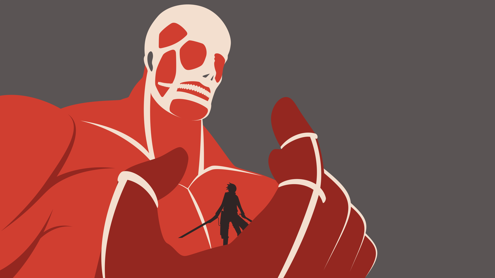

Es amigo de la infancia de Eren y Mikasa. Quienes tenían que protegerle ya que es el más débil y tímido del grupo. Aunque tiene una gran inteligencia con su capacidad estratégica y de conseguir soluciones rápidas. Su aspecto físico es bastante pequeño para su edad. Tiene una cara redonda, pelo rubio y ojos de color azul con una nariz regordeta. En cuanto a su personalidad, cuando era niño era muy tímido y físicamente débil. Nunca se metía en las peleas y daba su opinión sin usar la violencia. Pero con el paso del tiempo mejora su autoestima gracias a sus buenas decisiones en situaciones difíciles que se enfrentaban. Después de la caída del muro de Shinganshina, su hogar de origen se unió a la formación militar y después de tres años de entrenamiento se unen a las Tropas Estacionarias, pero por un incidente, pasan al Cuerpo de Exploración sobreviviendo fuera de los muros y enfrentándose a los titanes. Conoce a muchos compañeros del Cuerpo de Exploración, como Sasha, Conny, Jean, Reiner, Anne y Bertolt. Pero los tres últimos tienen un secreto escondido. Son de otro país y son el Titán Hembra, Titán Acorazado y el Titán Colosal. Éste último, Armin consigue convertirse en el Titán Colosal porque cuando retomaron el Muro María. Armin es quemado por el vapor del Titán y deciden darle al Titán Colosal. Inyectándole el suero y comer al propio Bertolt, convirtiéndose en el proceso, un Titán Cambiante.
